Move Order & Picking Phase
Explanation of Move Order - ABBA
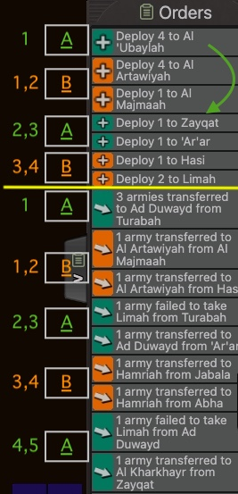
In accordance with Warzone Wiki Move Order Explanation, in a Warzone 1vs1 game between player A and player B, and under the assumption that player A has the first move, the move order alternates as ABBAABBAA…. This sequence can be described as follows:
- Player A executes their 1st move.
- Player B executes their 1st and 2nd moves consecutively.
- Player A executes their 2nd and 3rd moves consecutively.
- Player B executes their 3rd and 4th moves consecutively.
- Player A executes their 4th and 5th moves consecutively.
- Player B executes their 5th and 6th moves consecutively.
- And so on, following the ABBA pattern, with an example at Figure ABBA_image.
This pattern ensures that player A and player B alternate moves, with each player receiving consecutive moves in pairs after the first move by player A. The sequence ABBA then continues cyclically.
Of course, in the opposite case that player B has first move, then the move order follows the inverse pattern BAABBAABB …. The ABBA algorithm determines not only the order of moves but also the order of deployments, without exception. The arising question regarding the above rule, how is it decided which player moves first each turn. The answer to that question relies on the 3 different settings of implementation one can find upon creating a game. Needless to say, each game follows exactly 1 of the settings below:
- Random Move Order
- Cyclic Move Order
- No-Luck Cycle Move Order
Move Order Settings
Random Move Order
When a game is configured to Random Move Order, Warzone will randomize the move order on each turn. Very straight forward, no way to predict whether you have first move or not, it's a 50-50 chance. The ABBA pattern applies always.
When Warzone was first released, it resembled a lot Risk's settings of luck with dice rolls. Now I am not certain of this, but the game used to have only RMO for some years, with Fizzer pushing for a more strategic, less luck-heavy meta later on, which included cyclic and nlc. Older templates have RMO de facto. That has been the subject of discussion, with a lot of templates throughout time altered by the community from RMO to a periodic and predictable setting.
Cyclic Move Order
Suppose the picking phase of a Warzone's game is Turn 0, basically the only Turn happening prior to Turn 1, with the purpose of allocating territories to the 2 players based on their pick choices (assuming of course some manual distribution of territories). The first turn of the game (Turn 0), is randomised, just as it would be in the Random Move Order presented above, but subsequent turns reverse the order each time.
In an example of an 1vs1 game between player A and B, the dice is rolled during picking phase and let's assume for the sake of the example player A has 1st pick. Then player B gets 2 picks, then A gets 2 picks, and so on till both players exhaust the number of initial territories the corresponding template offers them. To sum it up, in Cyclic Move Order, and if player A had 1st pick, then:
- Every even Turn (Turn 2, 4, 6 etc) will involve the patter ABBAABB … meaning A has first move.
- Every odd Turn (Turn 1, 3, 5 etc) will involve the pattern BAABBAA … meaning B has first move.
What this implies is that move order is predictable. As long as you are able to perceive the move order once, you know who has first move each turn in the future and in the past.
No-Luck Cycle Move Order
No-Luck Cycle Move Order is the same as Cyclic, except that it aims to remove the random effect of the random roll on the first turn of who plays first. The initial order of the cycle is determined by how fast each player plays during their first turn. Under the assumption the game involves a manual distribution setting, the first turn is the picking phase, alternatively it's the first turn of the game. Whoever plays (and commits) faster, will be placed first in the move order.
Basically, whoever picks fastest can guarantee they will get their first pick of choice.
Discussion
If you study or at least come across games from the 2010s you'll quickly see that all templates featured RMO. The introduction of cyclic and NLC started as an attempt at reducing the luck factor in games. However this is a very controversial topic of discussion. NLC degrades
| Map | SR / WR | Specialty | Income | Picks | Armies per Initial Terr. | Move Order | Neutrals | Neutrals in Distr |
|---|---|---|---|---|---|---|---|---|
| Aseridith Islands | SR | INSS | 0 | 8 | 3 | cycle | 2 | 2 |
| Australia | SR | SR | 3 | 5 | 3 | cycle | 2 | 3 |
| Basileia | SR | SR | 5 | 3 | 4 | random | 2 | 2 |
| Battle for Middle Earth | SR | Luck | 5 | 3 | 4 | random | 2 | 4 |
| Battle Islands V | SR | SR | 5 | 3 | 4 | cycle | 2 | 4 |
| Belarus | WR | WR | 5 | 3 | 6 | cycle | 3 | 2 |
| Biomes of America | SR | INSS | 0 | 7 | 4 | cycle | 4 | 2 |
| Black Sea | SR | SR | 5 | 4 | 4 | random | 2 | 2 |
| Blitzkrieg Bork | SR | Army Cap | 5 | 3 | 4 | cycle | 2 | 2 |
| British Raj | WR | WR | 5 | 4 | 4 | random | 2 | 2 |
| Discovery | SR | SR | 4 | 4 | 3 | cycle | 6 | 2 |
| Earthsea | SR | Weird | 5 | 5 | 3 | cycle | 2 | 2 |
| Elitist Africa | SR | INSS | 5 | 7 | 4 | cycle | 2 | 2 |
| Fast Earth | SR | Kill Rate | 3 | 5 | 3 | cycle | 2 | 2 |
| Final Fantasy VII | WR | WR | 5 | 3 | 4 | random | 2 | 4 |
| French Brawl | SR | Extra | 4 | 6 | 3 | cycle | 2 | 2 |
| Georgia Army Cap | SR | Army Cap | 5 | 5 | 1 | cycle | 2 | 2 |
| Great Lakes | WR | WR | 6 | 4 | 5 | cycle | 3 | 2 |
| Greater Middle East III | SR | SR | 4 | 4 | 3 | random | 2 | 4 |
| Greece LD | SR | LD | 6 | 4 | 2 | cycle | 2 | 4 |
| Guiroma | SR | Luck | 5 | 4 | 5 | random | 2 | 4 |
| Hannibal at the Gates | SR | SR | 4 | 5 | 3 | random | 2 | 2 |
| Island of Ruins | SR | MOD | 4 | 5 | 2 | cycle | 4 | 2 |
| Laketown | SR | SR | 4 | 4 | 4 | random | 2 | 3 |
| Lampuria Swap | SR | MOD | 5 | 4 | 4 | cycle | 2 | 3 |
| Landria | SR | Weird | 5 | 6 | 4 | cycle | 2 | 2 |
| MA Battle Islands V | SR | Multi Attack | 5 | 3 | 6 | random | 1 | 4 |
| Macedonia no Split | SR | No Split | 3 | 5 | 4 | cycle | 2 | 2 |
| Malvia | SR | SR | 5 | 4 | 4 | cycle | 2 | 3 |
| MME MA LD | SR | Multi Attack | 5 | 3 | 4 | cycle | 2 | 4 |
| Numenor | SR | SR | 3 | 5 | 3 | cycle | 2 | 4 |
| Pangea Ultima | WR | WR | 6 | 3 | 2 | cycle | 2 | 4 |
| Phobia | WR | WR | 5 | 3 | 4 | random | 2 | 4 |
| Post-melt Antarctica | SR | SR | 5 | 3 | 4 | cycle | 2 | 0 |
| Randomized Strat ME | WR | WR | 5 | 3 | 4 | random | 2 | 4 |
| Saudi Arabia | SR | SR | 4 | 4 | 4 | cycle | 2 | 3 |
| Slow Burn | SR | SR | 3 | 3 | 2 | cycle | 2 | 3 |
| Strat ME | WR | WR | 5 | 3 | 4 | random | 2 | 4 |
| Strat MME | SR | SR | 5 | 3 | 4 | cycle | 2 | 4 |
| Strategic Commanders | WR | Commanders | 4 | 3 | 4 | cycle | 3 | 5 |
| Strategic Greece | SR | SR | 5 | 5 | 5 | random | 2 | 3 |
| Succession Wars | SR | LD | 0 | 7 | 4 | cycle | 3 | 2 |
| Tarabonia's Choice | SR | Light Fog | 4 | 3 | 4 | cycle | 2 | 4 |
| Timid Lands | SR | Kill Rate | 3 | 5 | 3 | cycle | 2 | 2 |
| Tor-ture | WR | WR | 5 | 4 | 4 | random | 2 | 4 |
| Treasure Map | SR | SR | 4 | 4 | 4 | cycle | 2 | 4 |
| Turkey LD | SR | LD | 3 | 3 | 4 | cycle | 2 | 2 |
| Unicorn Island | SR | SR | 5 | 5 | 3 | cycle | 2 | 4 |
| Volcano Island | SR | SR | 5 | 4 | 4 | cycle | 2 | 4 |
| World of Warhammer | SR | SR | 5 | 4 | 4 | random | 2 | 4 |
| Yorkshire Brawl | SR | Extra | 4 | 6 | 3 | cycle | 2 | 2 |
ABBA expanded to Team Games
2vs2
2vs2: ABBA in Orders and determining Move Order
Team Games (2vs2s and 3vs3s) tend to have cyclic move order. Expanding on this, the order follows the same ABBA pattern. In a 2vs2 game between Team A (players A1 and A2) and Team B (players B1 and B2), the move order would follow the pattern A1,B1,B2,A2 ,A2,B2,B1,A1 , A1,B1,B2,A2 …
This is best illustrated in the Figure moveorder_2v2s. Also remember that the ABBA pattern follows both the moves - orders and the deployments.
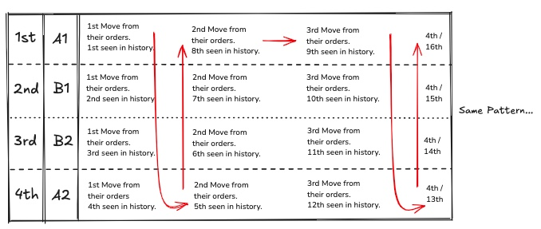
For example, in this Strategic 2vs2 game when checking the history from everyone's POV as well as my POV after Turn 1 we see Figure ex1 and ex2.

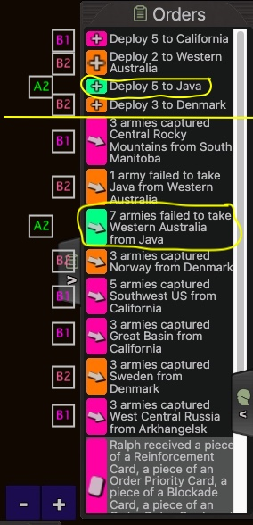
After Turn 1 me and my teammate should be able to figure out the move order within seconds. Upon seeing history, it's straight forward that on Turn 1 the order is Ralph->7ate9, with Xeno making an attack visible to us in between 7ate9's 1st and 2nd move. If Xeno and Jack were team B, then the moves we see in history are impossible to take place, considering the move order would be A1->B1->B2->A2->A2, implying that A2, in this case 7ate9, would have 2 consecutive moves (Figure 2v2deriving). As a result, Xeno/Jack are team A, and the move order is revealed to be:
- Odd Turns: 1.Jack, 2/3 Ralph, 7ate9, 4. Xeno
- Even Turns (and picks): 1. Xeno 2/3 7ate9, Ralph, 4. Jack
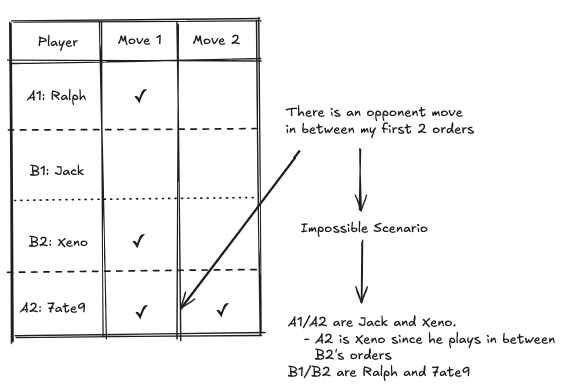
Following the same Strategic 2vs2 game, after figuring the Move Order, the next step is utilizing that so as to get any information possible for the opponent spawns as well as expansion and leftover armies.
2vs2: ABBA in making picks: Mirroring
In a Game between 2 teams, A and B, with each team having x number of players and each player receiving y number of territories, the total number of territories allocated to all players participating is 2xy. As such, during pick phase, you should always make enough picks up to the number 2xy, as you might end up losing enough picks to reach that number.
There is a core idea behind picking in Team Games, that holds true to every Team Game, regardless of the amount of players participating, and that is mirror picking. Suppose that in a 2vs2 template, there as an undisputed best territory/bonus in the board and you want for your team (team A for the example's sake) to maximize the chances that you get that. If team B mirror picks (meaning both B1 and B2 put their first pick on that territory), whereas team A has only A1 first pick it, then Team A has 25% probability to get first pick. Therefore, if there is a territory you want to make sure your team gets, mirroring first pick is the way. Expanding this idea to a quantifiable 2vs2 template where team A can confidently order the territories in distribution in a ranking of preference, has given birth to the idea that is "full mirroring".
By full mirroring, we refer to teams that would mirror pick their entire set of picks. For example, in Final Earth 2vs2 (commonly referred as Strat 2vs2) where each player receives 3 initial territories, full mirroring refers to making a ranking of 12 territories in the map and mirror picking the entire list. If a team full mirrors 1->12 in Final Earth 2vs2 and doesn't lose a single pick during pick phase, they get their first 6 territories, meaning player A1 receives 1,4,5 while A2 receives 2,3,6. If the team loses for example picks 3 and 4, then suddenly the distribution looks like A1: 1,6,7 and A2: 2,5,8 and the allocation looks completely different. This introduces us to the biggest drawback in mirror picking, that is ensuring coverage in the map for all possible scenarios of pick combinations for both players. Take a close look for example at this CW 2vs2 game. Team A full mirrors and receives their 1,3,4,6,7,8 allocated as:
- Aika: 1,6,7
- No.One: 3,4,8
After Turn 1 we quickly see that Aika has 3 contested picks. In expansion-heavy 2vs2 templates that might not be a big issue, as long as No.One could expand while Aika absorbs pressure, but 3 fronts vs 2 opponents at Turn 2 is impossible to overcome.
The argument in favor of mirroring (not necessarily full mirroring), is reducing the degrees of freedom or variance during picking phase. For example, take a look at this Ladder 2vs2 game, accompanied by Figure abba2v2. In the Figure, I have denoted:
- With G10 the 5 wastelands as well as with T2 the neutrals in the bonuses containing wastelands and R4 the in distribution spawns that belong to wastelanded bonuses.
- With Y4 the pickable territories in distribution.
- With white regions the 5 income zones. Thick white lines for the 2 safest income regions, Africa and Oceania, with the other 3 for NA, SA and Eurasia.
- With Yellow Team A's picks.
- With Pink Team B's picks.
- With Black arrows the fastest paths into the safe regions.
- With Bright Green 2 important territories in Eurasia.

First things first we can spot that both teams decide on covering the 2 safest income regions at picks 1-4 with the reasons being:
- If we successfully get our first 4 picks, with our last 2 picks as a team we cover 2/3 of the large income regions within 1-3 turns. The paths should be obvious:
- Indonesia -> Japan -> Cover East Asia
- Oceania -> Hawaii -> Cover USA
- South Africa -> Argentina -> Cover SA
- East Africa -> Europe into West Russia
- If we get 3 out of our first 4 picks, this means we have secured 1 safe income region and opt to get coverage in the other 3.
- If we split both safe income regions (expected result), we have to optimize accordingly the later picks.
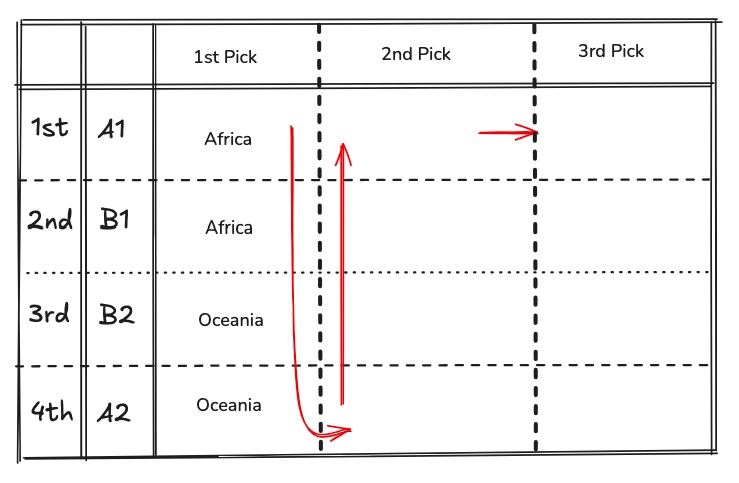
But what does it mean to optimize later picks? Under those premises, player A2 will get a territory, followed by team A getting 2 consecutive territories. So, if I am making picks and expecting my opponents to go for the same 1-5 territories, if I cover a region only with my 5th pick, I risk a 50-50% chance of losing that territory. If I want to take that risk I must optimize my 6/7, as I will be guaranteed to get them.
With that settled, the my pickset now make more sense.
- For my picks (7ate9): I select 5th in Ural based on:
- It's 3 double borders are all 4army neutrals that I either see Turn 1 or Turn 2 -> is relatively safely
- It is in the center of the biggest income region on the map, eurasia.
- Has immediate expansion if needed.
- Is a +3 bonus. Since I expect early contact and splitting 1-4, it's generally better to go for safe +3 bonuses instead of +4, as +4s require 10/10 of your deployments in the first 2 turns.
- If I lose Ural, I always get 6/7, which ensures for me coverage on NA and a backup safe +3 bonus in eurasia, Fast East Russia. The latter is especially useful for having direct paths to Oceania and NA.
- If I lose 6 in NA I either get two picks from 1-4, 5,7,8 and a last one, or I am getting two from 1-4, 5,7,9 and 1 more. Notice that it is impossible to lose all 6,7,8 under this scenario of splitting 1-4. As such,
- If I get two from 1-4, 5, 7, 8 and a last one, 8 is my coverage for NA and with the remaining picks i can stack cover the last income region.
- If I get two from 1-4, 5,7,9 I should be team A, have lost 6,8 but have Far East Russia to cover NA if needed + position my 10 in SA in the spawn closest to NA, while 12 also can positionally cover that.
2vs2: ABBA in making picks: Not Mirroring
As some wise people have said, full mirroring is a lazy way to pick. Let's take a look at two games, with the first one this Biomes 2vs2 game.

Upon looking at the distribution there are 3 combos that can either net income turn 1 or +3/+4 income on turn 2 with 0 deployments, followed by the more niche but equally strong combo in Gulf of Mexico. Due to the other good picks being relativelly slow, with the exception of the city in Brazil which can be covered in multiple ways, let's accept that the best course of action is split picking the 4 combos from 1-4 in both players. After that, Team A has a guaranteed pick on player A1, followed by two picks for team B followed by two picks on player A2.
The key in this distribution is recognizing that there are 3 territories worth mirroring at 5-7, in two cities and the farm in SA (look Rufus' team picks). If he loses the city in Brazil, he guarantees 6,7 which provide the last city as well as the farm in Argentina. Even more importantly, 8/9 should be split picks, since if you are team A, you want to capitalize on the fact that A2 will get two picks consecutively and you want to aim at them getting initial income.
In another example, again at Biomes 2vs2:
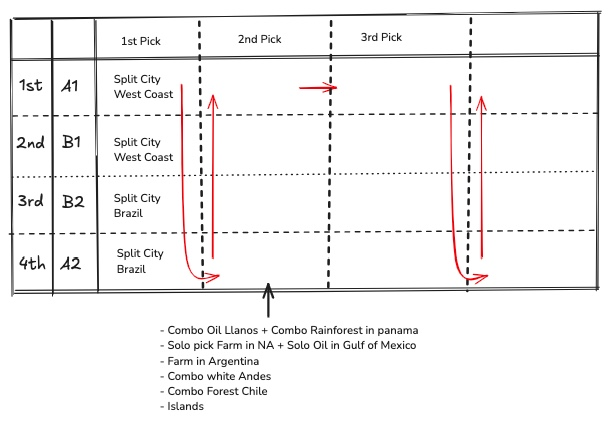
There are in the distribution two undisputed busted city combos that both teams should split pick 1-2 otherwise they are completely trolling. But after that we have a problem, as there are so many different combos and individual territories that we would like to cover. Experienced players should agree that the combo in Llanos (oil) as well as the solo Farm pick in NA are the best of the rest, as we can make multiple picks around Argentina and the whites in the surrounding region to ensure coverage. If we proceed on split picking after 1-2 and have one player do 3 in Farm in NA and 4 onward somewhere in Argentina while the other player does 3/4 in the oil in Llanos, then there is a hidden trap, that I try to exploit with my pickset.
- If the 3/4 Oil player is A1 and team B mirror picks 3-5 (2x Oil and Farm), then A2 gets solo Farm and team B get both Oil picks and can gift Turn 1 to get the bonus. Therefore there is 25% chance that a team not mirroring 3-5 can lose that combo entirely.
Proceeding on the same path, there are more issues arising, as shown in the next figure.

As long as both teams in some way or another split all picks from 1-7, player A1 is about to get a combo, with 2 consecutive picks. So, the correct approach after the combo oil & farm in NA, is to split pick between the two players of the team for the combos in either the rain-forest, or forest, or whites, so as to ensure that if you are team A, you get a really good combo on A1. Then, the only compensation that team B can get, since B1 and B2 get a pick each, and not a combo in one of them, is the Farm in Argentina as well as the Oil in Gulf of Mexico, followed by a combo pick for player A2.
Understanding all the intricacies of ABBA will give you the upper hand and a better and thorough understanding of the picking phase.
3vs3
Similarly to 2vs2 games, 3vs3 also tend to have cyclic move order. Expanding on this, the order follows the same ABBA pattern. In a 3vs3 game between Team A (players A1, A2 and A3) and Team B (players B1, B2 and B3), the move order would follow the pattern A1,B1,B2,A2,A3,B3 ,B3,A3,A2,B2,B1,A1 , A1,B1,B2,A2,A3,B3 …
This is best illustrated in the Figure 3vs3. Also remember that the ABBA pattern follows both the moves - orders and the deployments.
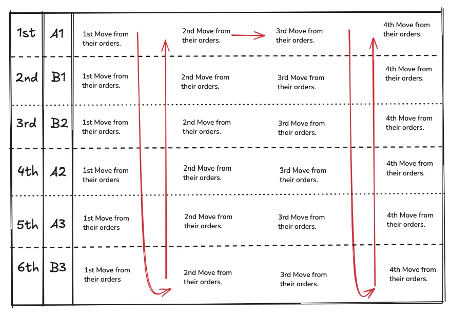
Mirroring, either fully or partially is extremely common in non-INSS 3vs3 templates, as it drastically reduces the number of variables while at the same time optimizing the probabilities of certain cover or combo picks. For example, one can go into analysing in detail this CL 3vs3 game, while taking into account the pick allocation order during the game. Analyzing a 3vs3 Europe game is an a exhausting and complicated task, in which I will not delve into at the moment.
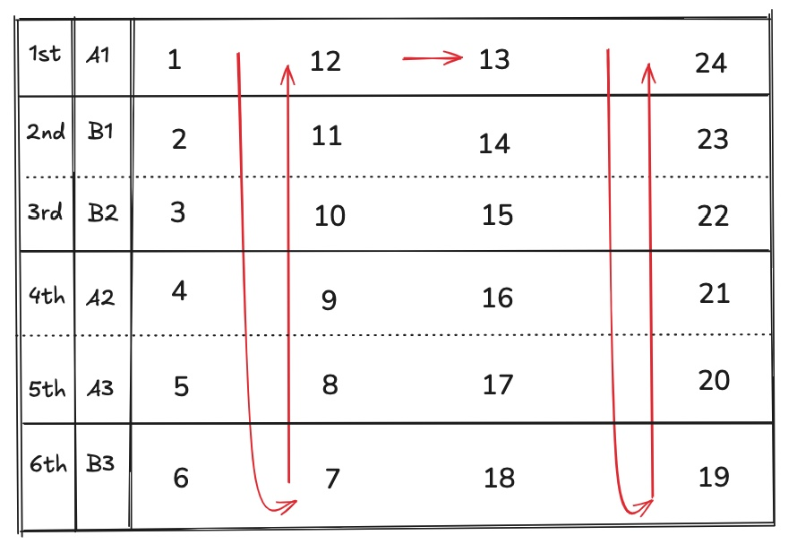
Structuring Picks
All of the important principles are very clearly written in M'Hunters Warlight Strategy Guide (Alternative link), something I suggest revisiting. I will not delve too deep into different picksets here, as this is case specific for each template and distribution, but rather use this to just comment on how to structure picks properly given a strategy and knowing your ABBA.
In the previous section when you saw the table you surely must be wondering why know all this. In reality, you do not need to memorize the combinations (sometimes), it is but a guideline for what you can expect. Take for example templates with 3 initial territories. We sometimes see in the distribution an FTB or a big income region and think to ourselves I will do 3/4/5/6 in that area, or 3/4/5 to counter that area and 6th somewhere else. The fault in this logic comes with assuming that we will always get our 1/2 and have our 3rd pick as a counter pick. If we lose one of our first 2 picks, then we suddenly find ourselves with a cluster at 3/4/5. In other words, sometimes we should deviate from the 1/2 safe 3/4/5 counter logic to a 1/2/3 safe 4/5/6 counter logic, with 1/2 combo and 3 safe, or gamble 1 safe 2/3 combo, or completely disregard both ideas and go for more versatile picks. Examples of this backfiring in 1v1 Ladder, Slow Burn, Strat ME.
Depending on the distribution in the game we can formulate picks based on what we expect to get or lose. For example in this Malvia game, the yellow +4 west as a first pick controls two FTBs. Besides that, there is immediate expansion to every direction while also controlling the south +5 and +4 with the neutral double borders within 1 move. At the same time, north east provides fast income in 2 ways, the no deploy +2 combo and the ftb +3 in the islands. If the two players A and B split 1-4, then player A will get 5 and 8, while B gets two consecutive at 6,7. What this means effectively, is that the plan of: combo 1-2, then combo 3-4, then cover a region with 5-6-7-8, risks a pickset like 1,4,5,6 with two picks in the region you wanted to cover last. Meanwhile, your opponent could in theory have 2,3, a safe pick somewhere else, and a last pick neighboring your 5,6. Therefore, for each combo you expect to split, you can push cover picks later on your pickset.
Another important idea during picks is knowing how to ensure coverage, or should I rephrase, setup your picks in a specific way so that you reduce the variance while picking. Ask yourself this question: In a 4 initial territory template like Malvia, are there any scenarios where I can lose 4 consecutive picks? What about 3 consecutive picks? What if I want to cover a region with my 3/4/5, is it ever possible losing that triple combination? Same goes for something like 4/5/6, or 5/6/7. The answers lie in the table below.
| n Consecutive | Combination | Picking Phase | Consecutive Missing |
|---|---|---|---|
| 4 | [1, 2, 3, 8] |
first | {4, 5, 6, 7} |
| 3 | [1, 2, 3, 7] |
first, second | {4, 5, 6} |
| 3 | [1, 2, 4, 8] |
first | {5, 6, 7} |
| 3 | [1, 3, 4, 8] |
first | {5, 6, 7} |
| 3 | [1, 2, 6, 7] |
second | {3, 4, 5} |
| 2 | [1, 4, 5, 6] |
first | {2, 3} |
| 2 | [1, 4, 5, 7] |
first | {2, 3} |
| 2 | [1, 4, 5, 8] |
first | {2, 3} |
| 2 | [1, 2, 5, 6] |
first, second | {3, 4} |
| 2 | [1, 2, 5, 7] |
first, second | {3, 4} |
| 2 | [1, 2, 5, 8] |
first | {3, 4} |
| 2 | [1, 2, 3, 6] |
first, second | {4, 5} |
| 2 | [2, 3, 6, 7] |
second | {4, 5} |
| 2 | [1, 2, 4, 7] |
first, second | {5, 6} |
| 2 | [1, 3, 4, 7] |
first, second | {5, 6} |
| 2 | [2, 3, 4, 7] |
second | {5, 6} |
| 2 | [1, 2, 5, 8] |
first | {6, 7} |
| 2 | [1, 3, 5, 8] |
first | {6, 7} |
| 2 | [1, 4, 5, 8] |
first | {6, 7} |
There are a lot of takeaways from this, but the simplest ones are:
- Covering an area or an FTB with 3/4/5 and losing all three guarantees a 1/2/6/7 with known move order.
- Covering an area or an FTB with 5/6/7 and losing all three, gives intel on move order and one of the combinations in the table.
- Expanding on that, you can lose 3/4/5 (get 1/2/6/7), you can lose 2/4/5 (get 1/3/6/7) and you can lose 1/4/5 (get 2/3/6/7). So if you can afford losing that sequence you control the outcome. If you can't afford losing all three because it is an FTB or a region you deem worthy of stacking, the latest you can guarantee coverage is at 2/3/5 (impossible to lose all three). You can lose 2/3/6 by getting first pick and a combination of 1/4/5 and a last pick on 7 or 8. If you think of picks by imagining the ABBA table these should make sense.
- Losing 2/3 translates to getting 1/4/5 and knowing move order.
- Losing 3/4 translates to getting 1/2/5 100% of the time. This does mean that you can use 5 to immediately counter 3/4, however you can position 5 somewhere that will counter the expansion from 3/4 while having a positional advantage.
- Losing 4/5 means you guarantee 2/3/6.
Some players actively think about these things. Some others have an amazing intuition and it comes to them naturally. Some others tend to forget and write things down, like me. Let's look fast at some games purely to evaluate the picks based on possible combinations, starting with this Guiroma game.
- The 2/3/4 combination around Illyricum, the most efficient bonus on the map, guarantees coverage, as it is impossible to lose 2/3/4 as well as 2/3/5. Choosing to do 4 Illy instead of 5 comes simply from wanting to get that triple pick, as it is dominating.
- 3 in Asia instead of Illyricum as losing 1, guarantees 2/3, and 3 is the latest of the two, providing coverage in the whole Turkey income region. 2 can be completed by the end of t1.
- Consider adrenaline's 1/2/3/4 only. At worst he gets only two of the four picks. There are two paths moving on with picks from here. One of them revolves doing 5 in a safe bonus, then 6/7/8 in an income region. The other revolves around doing 5/6 in one region and 7/8 in another region. The first, involves the 50-50% risk of losing coverage. The latter involves the possibility of getting 5/6 vs a situation where your opponent gets a safe pick and a counter to your 5/6. This dilemma is something that depends on your comfort as well as the distribution give to you.
- If you scout completed games by the best players in the website, you will see a trend where the 5/6 and 7/8 style is preferred. To me, the answer lies in the size of the map and the number of areas you deem worthy of ensuring coverage. after 1-4 there is only one region left, it might be worth it going for 5 safe into 6/7/8 cover, planning to get 1/4/5/8 or 2/3/6/7. If there's multiple regions, then 5/6 into 7/8 eliminates the coinflip of whether i get my choice of safe 5 or not.
Ultimately, remember that every scenario is unique and every set can be countered the weirdest blind counter in existence.
It becomes increasingly fruitless to construct a matrix similar to the previous one for more than 5 Initial Territory maps, as the pick combinations are way too many. Nevertheless, maybe this table is useful to you.
| n Consecutive | Combination | Picking Phase | Consecutive Missing |
|---|---|---|---|
| 5 | [1, 2, 3, 4, 10] |
second | {5, 6, 7, 8, 9} |
| 4 | [1, 2, 3, 8, 9] |
first | {4, 5, 6, 7} |
| 4 | [1, 2, 3, 4, 9] |
first, second | {5, 6, 7, 8} |
| 4 | [1, 2, 3, 5, 10] |
second | {6, 7, 8, 9} |
| 4 | [1, 2, 4, 5, 10] |
second | {6, 7, 8, 9} |
| 4 | [1, 3, 4, 5, 10] |
second | {6, 7, 8, 9} |
| 4 | [2, 3, 4, 5, 10] |
second | {6, 7, 8, 9} |
| 3 | [1, 2, 3, 6, 10] |
second | {7, 8, 9} |
| 3 | [1, 2, 4, 6, 10] |
second | {7, 8, 9} |
| 3 | [1, 2, 5, 6, 10] |
second | {7, 8, 9} |
| 3 | [1, 3, 4, 6, 10] |
second | {7, 8, 9} |
| 3 | [1, 3, 5, 6, 10] |
second | {7, 8, 9} |
| 3 | [2, 3, 4, 6, 10] |
second | {7, 8, 9} |
| 3 | [2, 3, 5, 6, 10] |
second | {7, 8, 9} |
| 3 | [1, 2, 3, 5, 9] |
first, second | {6, 7, 8} |
| 3 | [1, 2, 4, 5, 9] |
first, second | {6, 7, 8} |
| 3 | [1, 3, 4, 5, 9] |
first, second | {6, 7, 8} |
| 3 | [2, 3, 4, 5, 9] |
second | {6, 7, 8} |
| 3 | [1, 2, 3, 4, 8] |
first, second | {5, 6, 7} |
| 3 | [1, 2, 4, 8, 9] |
first | {5, 6, 7} |
| 3 | [1, 3, 4, 8, 9] |
first | {5, 6, 7} |
| 3 | [1, 2, 3, 7, 8] |
first, second | {4, 5, 6} |
| 3 | [1, 2, 3, 7, 9] |
first, second | {4, 5, 6} |
| 3 | [1, 2, 3, 7, 10] |
second | {4, 5, 6} |
| 3 | [1, 2, 6, 7, 8] |
second | {3, 4, 5} |
| 3 | [1, 2, 6, 7, 9] |
second | {3, 4, 5} |
| 3 | [1, 2, 6, 7, 10] |
second | {3, 4, 5} |
| 2 | [1, 2, 3, 7, 10] |
second | {8, 9} |
| 2 | [1, 2, 4, 7, 10] | second | {8, 9} |
| 2 | [1, 2, 5, 7, 10] | second | {8, 9} |
| 2 | [1, 2, 6, 7, 10] | second | {8, 9} |
| 2 | [1, 3, 4, 7, 10] | second | {8, 9} |
| 2 | [1, 3, 5, 7, 10] | second | {8, 9} |
| 2 | [1, 3, 6, 7, 10] | second | {8, 9} |
| 2 | [2, 3, 4, 7, 10] | second | {8, 9} |
| 2 | [2, 3, 5, 7, 10] | second | {8, 9} |
| 2 | [2, 3, 6, 7, 10] | second | {8, 9} |
| 2 | [1, 2, 3, 6, 9] |
first, second | {7, 8} |
| 2 | [1, 2, 4, 6, 9] | first, second | {7, 8} |
| 2 | [1, 2, 5, 6, 9] | first, second | {7, 8} |
| 2 | [1, 3, 4, 6, 9] | first, second | {7, 8} |
| 2 | [1, 3, 5, 6, 9] | first, second | {7, 8} |
| 2 | [1, 4, 5, 6, 9] | first | {7, 8} |
| 2 | [2, 3, 4, 6, 9] | second | {7, 8} |
| 2 | [2, 3, 5, 6, 9] | second | {7, 8} |
| 2 | [1, 2, 3, 5, 8] |
first, second | {6, 7} |
| 2 | [1, 2, 4, 5, 8] | first, second | {6, 7} |
| 2 | [1, 2, 5, 8, 9] | first | {6, 7} |
| 2 | [1, 3, 4, 5, 8] | first, second | {6, 7} |
| 2 | [1, 3, 5, 8, 9] | first | {6, 7} |
| 2 | [1, 4, 5, 8, 9] | first | {6, 7} |
| 2 | [2, 3, 4, 5, 8] | second | {6, 7} |
| 2 | [1, 2, 3, 4, 7] |
first, second | {5, 6} |
| 2 | [1, 2, 4, 7, 8] | first, second | {5, 6} |
| 2 | [1, 2, 4, 7, 9] | first, second | {5, 6} |
| 2 | [1, 3, 4, 7, 8] | first, second | {5, 6} |
| 2 | [1, 3, 4, 7, 9] | first, second | {5, 6} |
| 2 | [1, 2, 4, 7, 10] | second | {5, 6} |
| 2 | [1, 3, 4, 7, 10] | second | {5, 6} |
| 2 | [2, 3, 4, 7, 8] | second | {5, 6} |
| 2 | [2, 3, 4, 7, 9] | second | {5, 6} |
| 2 | [2, 3, 4, 7, 10] | second | {5, 6} |
| 2 | [1, 2, 3, 6, 7] |
first, second | {4, 5} |
| 2 | [1, 2, 3, 6, 8] | first, second | {4, 5} |
| 2 | [1, 2, 3, 6, 9] | first, second | {4, 5} |
| 2 | [1, 2, 3, 6, 10] | second | {4, 5} |
| 2 | [1, 3, 6, 7, 8] | second | {4, 5} |
| 2 | [1, 3, 6, 7, 9] | second | {4, 5} |
| 2 | [1, 3, 6, 7, 10] | second | {4, 5} |
| 2 | [2, 3, 6, 7, 8] | second | {4, 5} |
| 2 | [2, 3, 6, 7, 9] | second | {4, 5} |
| 2 | [2, 3, 6, 7, 10] | second | {4, 5} |
Some links I need for specific templates later:
Order of Deployment
Best explained with an example Chris vs Ragnar, MTL. I received my first 3 picks. End of turn 3 I meet up an opponent an a very suspicious place. Look at the game from my POV turn 4, specifically the deployments that took place.

I deploy 3 times and then I see my opponent's deployment of 8 armies. I can derive from his capture of 4 armies that on that specific turn, I had 1st move. Deployments also follow move order. That means Ragnar deployed in 2 places or more before deploying on the border vs me. Get into the habit of hiding your position and income. If your opponent is repeatedly making this again and again and again, use that information against them.
Another example is Chris vs Gincompetent, 1vs1 Ladder, Turn 4. I know from the attacks that have taken place, that I have first move on turn 4. And my opponent deploys elsewhere twice, then on me. + I see all his delays. After such a turn you should be able to understand exactly where you opponent is. Invest those 3 minutes to understand the position and find the winning moves.
Figuring the Move Order based on pick outcome
On guessing with some certainty the move order from the pick outcome in non-light fog templates. examples from inss, or templates with a lot of picks, where you can be somewhat certain what the move order is based on the picks. Not 100% but somewhat certain.
For example in this Earthsea game (my picks are pretty bad, don't use this as a guideline for how to pick on the template), I receive 1/2/4/7/8 and lose 3/5/6 as well 10. The issue after the territory allocation is that without information on the move order, I cannot make sound moves as me and Guest are contesting two red +1 castles.
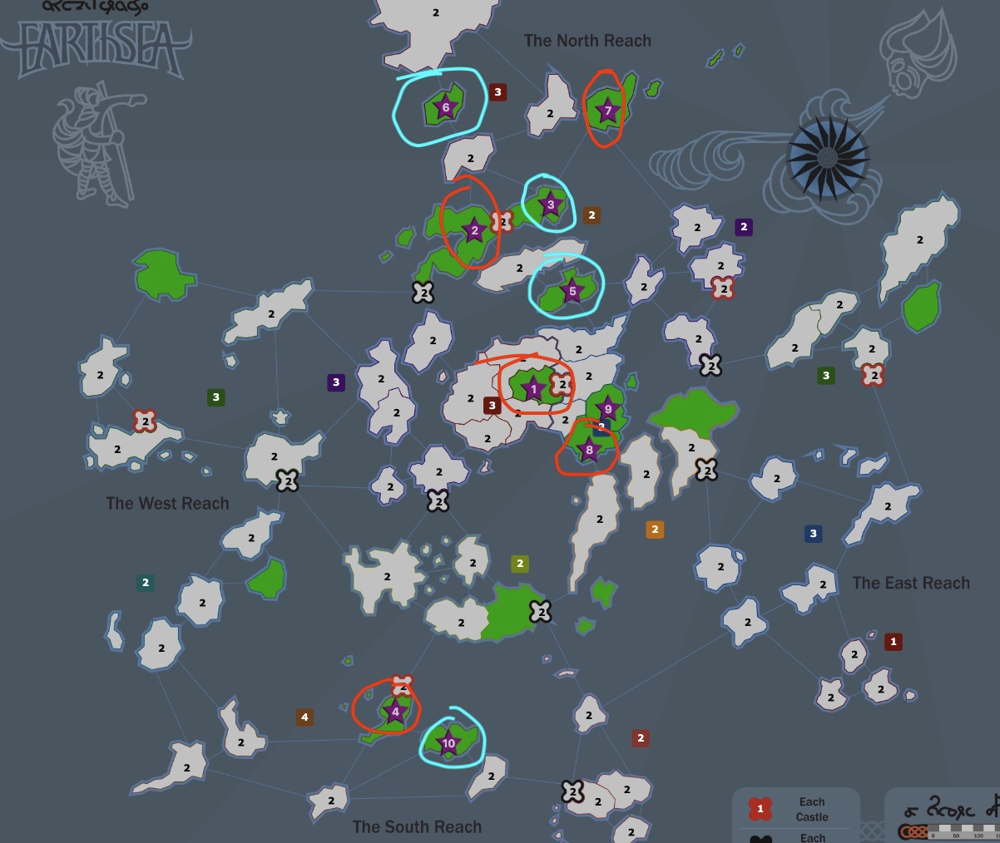
But let's assume that I was first pick, meaning Guest moves first on turn 1. Then the allocation would have to look as shown below which logically speaking doesn't make sense from any possible perspective. With the numbers below identifying the territories as I picked them:
- If Guest decided to include all the territories that border the +1s, or 3/4 of those, in his first 4 picks, it is impossible for me get 3/4 as first pick. It would have to be 7ate9: 1, Guest: 2,3, 7ate9: 4,5 etc but I received 1,2,4.
- If Guest decided to do picks in order of 1->2->3->5 prioritising the central +1 followed by the ftb I picked at 2/3/5, or did his first three picks on my 2/3/5, it again doesn't make sense.
It is useful in your own games to try and apply trial and error into thinking what was your opponents idea in picks so as to derive how they will act upon the distribution they received, as well as the move order. In this game, while I am not certain of the move order, I am fairly confident I was second pick and choose to play my moves under that assumption.

Turn Phases
In reference to Wikipedia on Turn phases, understanding this is vital to a lot of tricks as well as strategy in general. There are distinct phases where each action takes place, with those being the below. These turn phases are absolute, they are applied 24/7, unless there is a Mod in the game bypassing a mechanic. The list is taken from the Wikipedia, but isn't entirely correct with some details like the diplomacy card wearing off after receiving new cards.
-
- Active Cards wear off
- Discards
-
- Order Priority Cards
- Spy-like Cards
- Reinforcement Cards
- Deploy / Purchase
-
- Bomb Cards
- Emergency Blockade
- Airlift Cards
- Gift Cards
- Attacks/Transfers and Order Delay Cards
- Blockade
- Sanction Cards
- Receive new cards
The move order isn't applied in all of the Turn Phases, albeit it is in some:
- Active Cards wear off
- Discards
- Order Priority Cards
- Spy-like Cards
- Reinforcement Cards: They are executed in the same order as the turn. For example, Turn 9.
- Deploy / Purchase: They are executed in the same order as the turn.
- Bomb Cards: clueless
- Emergency Blockade: They are executed in the same order as the turn. For example, turns 15, 19, 44.
- Airlift Cards: clueless and haven't bothered to check.
- Gift Cards: They are executed in the same order as the turn. For Example.
- Attacks/Transfers and Order Delay Cards
- Blockade: They are executed in the same order as the turn. For Example, Turn 20.
- Sanction Cards: They are executed in the same order as the turn. For Example, Turn 5.
- Receive new cards: One of the players is selected (no idea as to the rule) and that player is always first in that list. For example. Therefore, this cannot be used to either derive the move order, or gain any advantage.
There are a handful of small things one can note of, but most of them are extremely case-specific. As an example, in Georgia Army Cap and Landria the players have an abundance of Blockades. It's always recommended to first blockade territories bordering your opponent so as to avoid passing information on how many territories you blockaded or how many cards you used.
Order Delay and Phases
So the first mention of this that I found dates back to 2016. But before we jump deep into this, let's first understand the way OD functions with this Game, and Turns 10, 17 shown below.
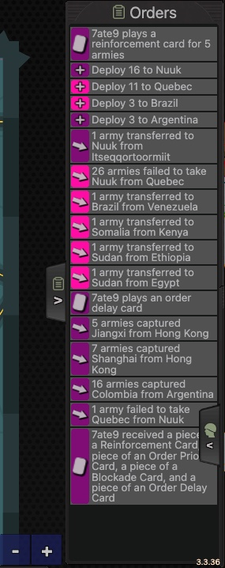
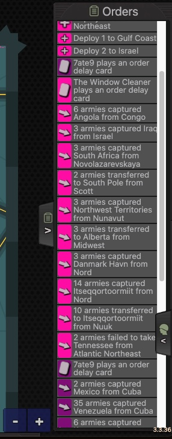
Playing an OD card effectively creates a new phase for orders to execute in. Playing a set of OD cards at the same time, or more, pushes moves to a second, or latter phase, respectively. But you can queue moves between each OD phase. The arising question is what happens with the move order, as in the above 2016 forum, quoting this game, turn 7 doesn't seem to make any sense. Fizzer's response to it was:
- Consider all players with unprocessed orders. Is the top order for everyone an OD?
- If so, process one OD from everyone.
- Process top order from each player whose top order is not an order delay card.
- Reverse the move order
- If there are still unprocessed orders, go to 1
So to explain it further, in that game on Turn 7, first move belongs to Sultan. After deployments, the above algorithm is implemented:
- 1. Is skipped since not both players have OD first
- 2. Njord's first move is played
- 3. Move order is reversed, meaning next move will belong to njord, followed by 2x from sultan, etc.
- 4. If there were unprocessed orders this algorithm repeats. Here there aren't. The set of ODs is played.
Practically speaking, this algorithm implies that moves in this game are coded as AB pairs and not ABBA pairs, with the order flipped after each pair. If A has a move while B doesn't then the order will still be flipped if the turn has more actions later on during an OD. Now I will use the same simple matrix used in Gak's and Solar's trick to define a set of ODs as well as the actions before, in between and after those.

Applying the same algorithm on Turn 19 as well as Turn 19 proves that in the before ODs phase:
- Playing a single move results in the move order always getting flipped. So, here, on Turn 19 Krzysztof has first move, has 1 order in the before OD phase. Move order then is reversed to 1. nickpugs 2. Krzysztof. Set of ODs is played, followed by 1 move from nickpugs, 2 from Krzysztof and so on.
- If there are no moves played, the move order is not flipped Turn 1.
- If there are 2 moves played, the move order is flipped twice, practically speaking going back to the original one, like Turn 19.
- 3 onward you get the memo.
When 2 sets of ODs are played like in Turn 37, the algorithm is still run as above. Specifically:
- 1. Yes the top order from both is an OD -> 1st set of ODs is played
- 2. No order found in this setup to process
- 3. Move order is reversed. Now Crazy has first move.
- 4. There are still unprocessed orders so back to 1.
- 1. The second set of ODs is played.
- 2. Crazy's first move is played. Move Order reversed, no more ODs, proceed into 2x Gak etc
The trick behind these, is that the game treats 0-moves in the same way it treats every other order, as it doesn't know the orders will fail. Therefore, you can use a failed 0-move like in Turn 7 to make sure the cycle after the set of ODs favors you (Rufus playing 2 moves before the set of ODs makes it that the order is not flipped and he has first move after the set of ODs, especially since Rufus plays an OP himself). You can scout for more scenarios in Solar's games 1 and 2.